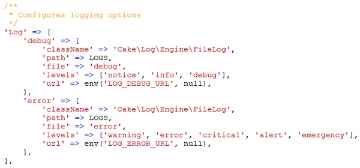
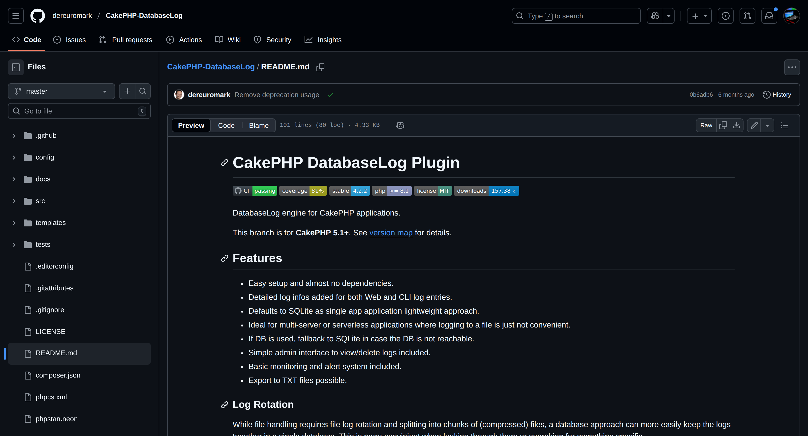
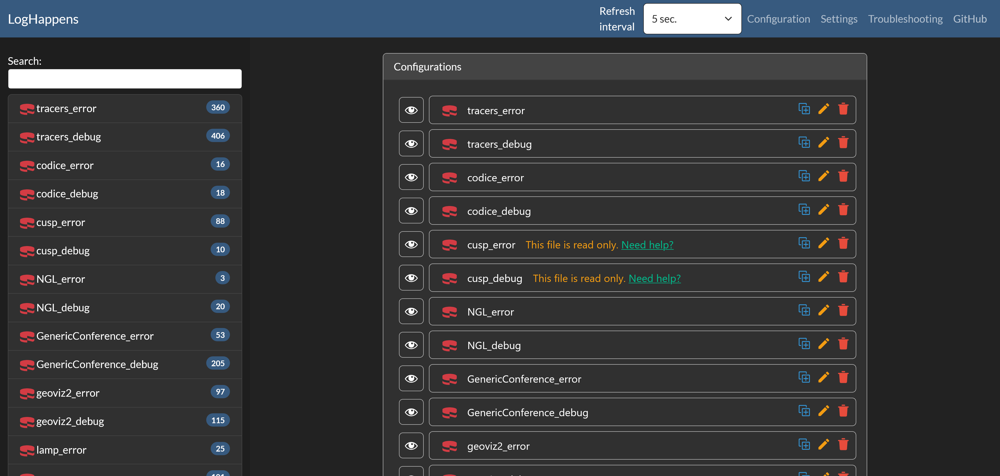
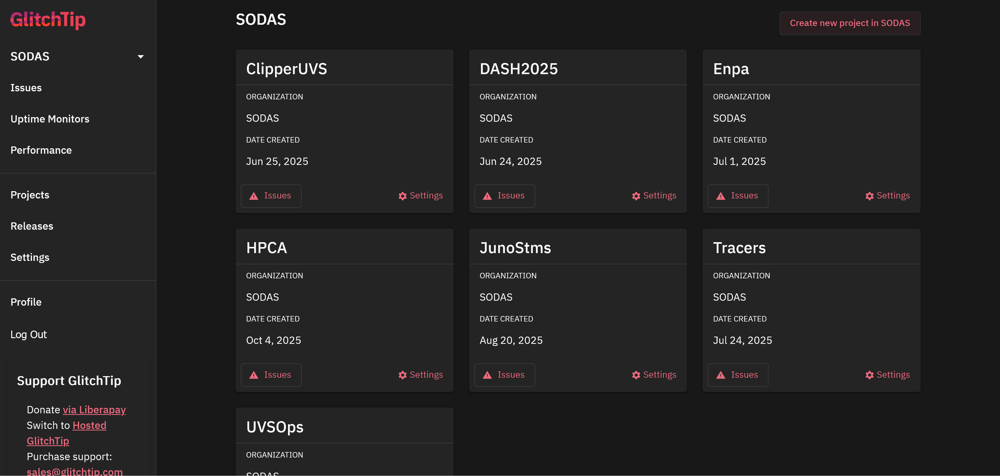
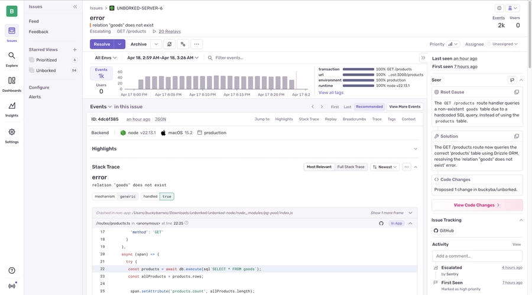
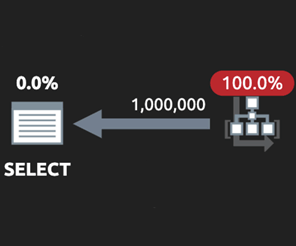
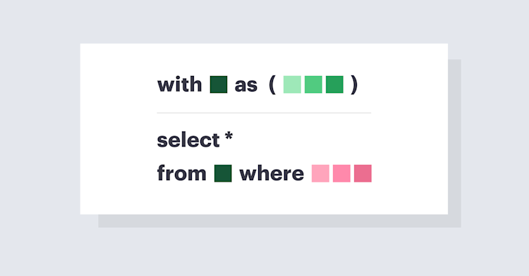
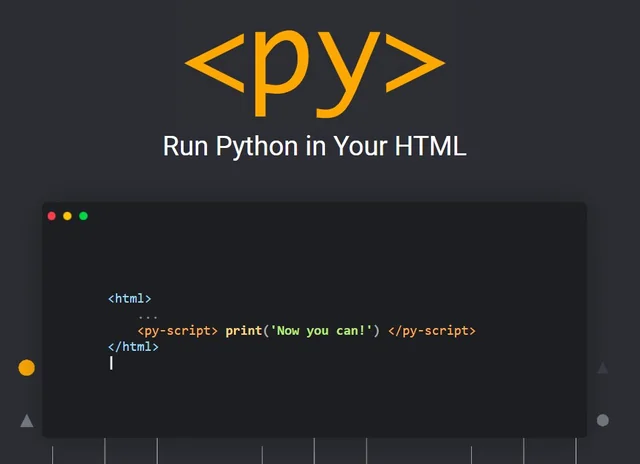
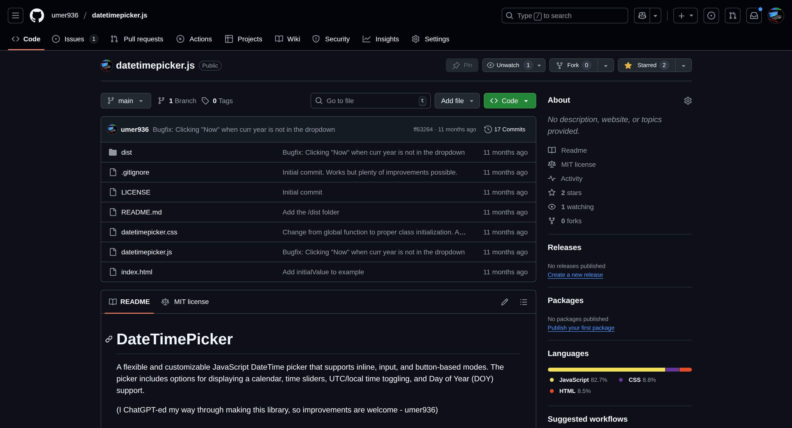
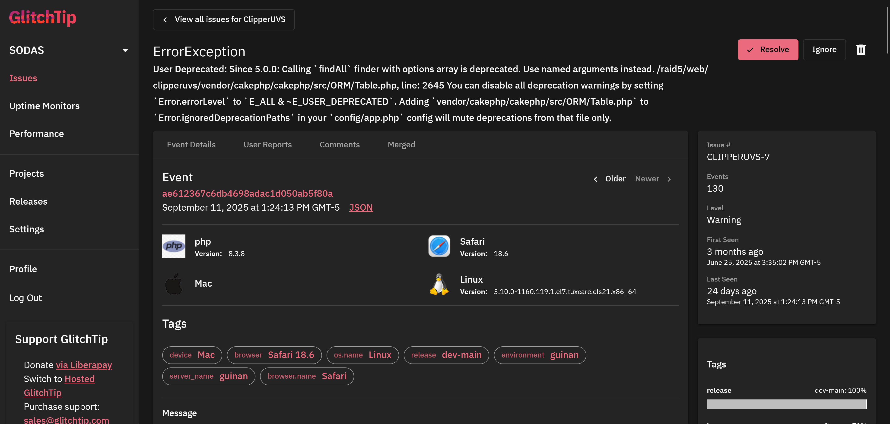

🍰 CakePHP PowerUps
Umer Salman
CakeFest 2025
Progressive CakePHP PowerUps
From a cupcake to a large cake, you can level up your app incrementally.
Logging
Data Queries
WebAssembly
Logging PowerUps
CakePHP Log Files
database-log
log Happens
GlitchTip

Sentry

Data Query PowerUps
Select + Unions
CTE

TimescaleDB
Everything else!
PyScript

WASM
Date TimePickerJS
https://umer936.com/cakefest-2025/
Feel free to contact:
Slack: umer936
umer936@gmail.com
https://github.com/umer936
CakePHP Logs
cli-debug.log
Loading...debug.log
Loading...error.log
Loading...CakePHP-DatabaseLog
LogHappens
GlitchTip


Uses the Sentry API. Can just use https://github.com/lordsimal/cakephp-sentry
Sentry
Select + Unions Example
/**
* @param int $fields_id
* @param $start
* @param $stop
* @param int|null $spacecraft_id
* @param array|null $filters
* @return array[]
*
* TODO: Make faster. Might be able to use this? https://book.cakephp.org/5/en/orm/query-builder.html#case-statements
* Can't I do the filter subqueries outside and just pass in the epochs?
* We should also display the number of points (count) and how many in the result
* TODO: save in the Grid save
*/
public function getTimeValues(int $fields_id, $start, $stop, int $spacecraft_id = null, array $filters = null)
{
$plotData = $this
->find()
->select(['epoch', 'value'])
->where(['fields_id' => $fields_id])
->where(function (QueryExpression $exp) use ($start, $stop) {
return $exp->between('epoch', $start, $stop);
}); // can not add order here!
if ($spacecraft_id !== null) {
$plotData->where(['HAndSValues.spacecraft_id' => $spacecraft_id]);
}
if (!empty($filters)) {
foreach ($filters as $filter) {
$subQuery = $this->find('filter',
fields_id: (int)$filter['select_id'],
start: $start,
stop: $stop,
spacecraft_id: (int)$filter['spacecraft_id'],
filter_type: $filter['filter_type'],
filter: $filter,
);
$plotData->where(function (QueryExpression $exp) use ($subQuery) {
return $exp->in('epoch', $subQuery);
});
}
}
$totalRows = $plotData->count();
$points = 1000;
$scaleFactor = max(1, floor($totalRows / $points));
if ($scaleFactor > 1) {
// MOD on ID actually isn't correct as we don't know that the IDs are sequential
$middleData = $plotData->cleanCopy()->where(function () use ($scaleFactor) {
return "MOD(id, $scaleFactor) = 0";
})->orderByAsc('epoch');
$first = $plotData->cleanCopy()->orderByAsc('epoch')->limit(1);
$last = $plotData->cleanCopy()->orderByDesc('epoch')->limit(1);
// We can't use the union since the data does not necessarily merge in the right order.
// We noticed this on CoDICE - using a collection doesn't seem to be bad though.
// $query = $first->unionAll($middleData)->union($last);
$query = new Collection ($middleData->all ());
$query->prepend ($first->all ());
$query->append ($last->all ());
} else {
$query = $plotData->cleanCopy()->orderByAsc('epoch');
}
$epochs = [];
$values = [];
foreach ($query as $result) {
$epochs[] = $result->epoch->format('Y-m-d\TH:i:s.u');
$values[] = $result->value;
}
return [$epochs, $values];
}
Note: We used to groupBy('fields_id') to force it to use the
index, but that's no longer needed due to
optimizerHint()!
Merged PR: https://github.com/cakephp/cakephp/pull/18688
CTE Example Code
/**
* Samples data points from a plot query to reduce the number of points.
* The sampling algorithm:
* - Calculates row numbers for the data points
* - If total rows <= requested points, returns all data
* - Otherwise, samples every nth row where n = ceil(totalRows/points)
* - Ensures first and last points are included regardless of sampling
*
* @param \Cake\ORM\Query\SelectQuery $plotData The base query containing plot data with epoch and value columns
* @param string $start The start timestamp for the data range
* @param string $stop The stop timestamp for the data range
* @param int $points The desired number of data points (default: 1000)
* @return iterable Returns a collection of sampled data points ordered by epoch
*/
public function samplePlotData(SelectQuery $plotData, string $start, string $stop, int $points = 1000): iterable
{
// Create a base query from $plotData with row number, include fields_id for index
$baseQuery = $plotData
->cleanCopy()
->select([
'fields_id' => 'fields_id',
'rn' => $plotData->func()->rowNumber()->over('(ORDER BY epoch ASC)')
])
->disableAutoAliasing()
->where(fn(QueryExpression $exp) => $exp->between('epoch', $start, $stop));
$totalRows = $baseQuery->cleanCopy()->count();
// If $totalRows < $points, no need to sample
if ($totalRows <= $points) {
return $baseQuery->all();
}
// I changed it from floor() to ceil() to keep it under the requested number of points
$scaleFactor = (int)max(1, ceil($totalRows / $points));
$cte = new CommonTableExpression('base_data', $baseQuery);
// First point
$firstQuery = $plotData
->cleanCopy()
->from('base_data')
->orderByAsc('epoch')
->limit(1)
->disableAutoAliasing();
// Last point
$lastQuery = $plotData
->cleanCopy()
->from('base_data')
->orderByDesc('epoch')
->limit(1)
->disableAutoAliasing();
// Sampled data (every nth row, excluding first and last)
$sampledQuery = $plotData
->cleanCopy()
->from('base_data')
->where(fn(QueryExpression $exp) => $exp->eq("MOD(rn, {$scaleFactor})", 0, 'integer'))
->disableAutoAliasing();
// Combine all
$finalQuery =
$firstQuery
->union($sampledQuery)
->union($lastQuery)
->with($cte)
->orderByAsc('epoch');
return $finalQuery->all();
}
Postgres Example
public function samplePlotData(Query $plotData, string $start, string $stop, int $points = 1000): iterable
{
// Base query with row numbering and total rows in one pass
$baseQuery = $plotData
->cleanCopy()
->select([
'fields_id' => 'fields_id',
'epoch' => 'epoch',
'value' => 'value',
'rn' => $plotData->func()->rowNumber()->over('(ORDER BY epoch ASC)'),
'total_rows' => $plotData->func()->count('*')->over()
])
->where(fn(QueryExpression $exp) => $exp->between('epoch', $start, $stop))
->disableAutoAliasing();
// Sample first, last, and every nth row in a single filter
$sampleQuery = $plotData
->newExpr()
->from(['base' => $baseQuery])
->select(['fields_id', 'epoch', 'value'])
->where(function (QueryExpression $exp, Query $q) use ($points) {
$modExpr = $q->func()->mod([
'rn' => 'identifier',
$q->newExpr()->ceil(['total_rows / ' . $points => 'literal'])
]);
return $exp->or([
'rn = 1', // first row
'rn = total_rows', // last row
$exp->eq($modExpr, 0) // every nth row
]);
})
->orderByAsc('epoch');
return $sampleQuery->all();
}
Note: haven't gotten here yet. TimescaleDB is a PostgreSQL extension
optimized for time series data.
PyScript Example (Dynamic)
quat_converter.html
Loading...QuatConverterConfig.toml
Loading...QuatConverterPyScript.py
Loading...CakePHP Example (Using Files from Webroot)
Loading...
Preview will load when modal opens...